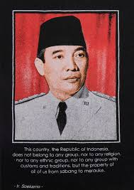

Image Gallery

Soekarno
Soekarno adalah presiden RI yang pertama

Soeharto
Soeharto adalah presiden RI yang kedua

Baharuddin Jusuf Habibie
BJ Habibie adalah presiden RI yang ketiga

KH. Abdurrahman Wahid
KH. Abdurrahman Wahid (Gus Dur) adalah presiden RI yang keempat

Susilo Bambang Yudhoyono
Susilo Bambang Yudhoyono (SBY) adalah presiden RI yang kelima

Ir.H. Joko Widodo
Ir.H.joko Widodo adalah presiden RI yang keenam